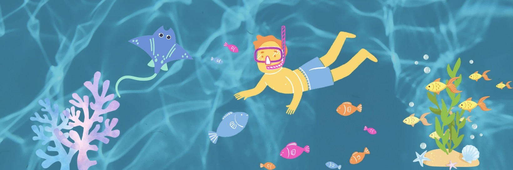

| ประวัติจังหวัดระยอง | ของฝาก | |
นอกจากทะเลแล้ว ที่ระยองยังมี น้ำตกเขาชะเมา ให้ได้ไปชิลคลายร้อนกันอีกด้วย ที่นี่ตั้งอยู่ในอุทยานแห่งชาติเขาชะเมา จังหวัดระยองค่ะ เหมาะสำหรับคนชอบเที่ยวในเชิงอนุรักษ์ อีกทั้งน้ำตกยังมีสวยงามถึง 8 ชั้น น้ำใสปิ๊งๆ และยังมีปลาพวงหินเต็มไปหมดเลยทีเดียว ที่อยู่ : อำเภอเขาชะเมา จังหวัดระยอง พิกัด : https://goo.gl/maps/fmtDosX3mJ71mwwBA เปิดให้เข้าชม : 08.00-18.00 น. โทร : 0-3899-6202 เว็บไซต์ : https://www.facebook.com/อุทยานแห่งชาติเขาชะเมา-เขาวง |
||
|  |